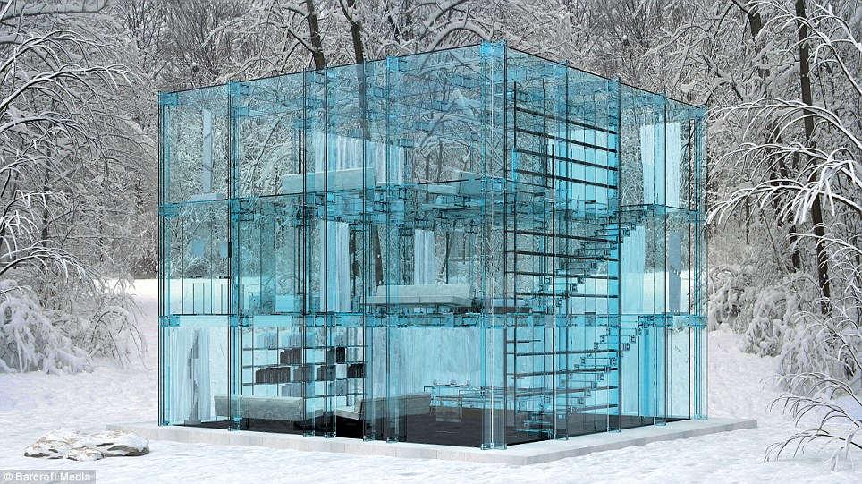

受到时只怪自己。
遇到挫折，无论怎样怪别人，最终都是徒劳无益的。那么我们也只能是怪自己没有选择好，因为任何时候只怪自己，始终是最明智、正确的生活态度。只怪自己是一种力量。而习惯于责怪他人的人迟早要招致怨恨，一个勇于律己的人无疑是高尚的，他会因此有包容整个世界的力量，让所有人钦佩其不凡的风度并乐于交往。
怨天尤人其实是一种懦弱，更是一种不成熟的表现，不但掩盖了自己不能面对的现实，还留下了将来可能重蹈覆辙的隐患。（）而不客观地责怪他人还会衍生出新的矛盾。一个真正意义上的强者并不是一个一帆风顺的幸运儿，必然要经历各种痛苦和挑战，而战胜一切困难的人首先必须战胜自己，战胜自己的前提就是反省自身，只怪自己。只怪自己是一种境界。其实就算别人真有可以谴责之处，过分地责怪也是于事无补的，生气更不能解决任何问题，而从自身检讨才是一条唯一可行的道路，根本就不存在什么问题。在这个世界上最难以战胜的敌人其实就是自己，如果一个人已经到了只剩下自己这一个对手时，实际上他已经是天下无敌了。
收拾好你的心情，继续出发。
人生，总是会遇到很多的困难，我们想要的生活究竟是什么样的呢？我们每个人都是在为了自己去战斗，为了自己去努力，我们没有理由放弃，收拾好你的心情，继续出发，小编给大家带来了些感悟人生的情感语录心情说说，一起看吧。
1、可我回头的时候撞了南墙，直到撞的头破血流，也没有放弃过。还去劝别人别浪，可是感情也没放过我。人呀，还是要自私，这是一种自我保护。
2、以前读书互相的损友，无事不谈，喜欢一起抽烟，喝酒，一起搞怪，如今都踏入社会，人散了，曾经的朋友不在了各居一方，自己颓颓废废，抽烟喝酒，剩一条命，多想找回以前 的日子，如果有机会，多想再次相聚，喝酒，谈谈自己傻逼的人生。
3、仔细想来，不过只是一片随风飘零的落叶，渴望着飞向远方，却只会落在柏油路上，连归根也成了奢望。
4、孤独的，是人间观察员。我想我应该这众多观察员中是优秀的那个吧！习惯孤独不怕孤独享受孤独。
5、有时候感觉好累啊。想把工作干好，太积极，结果得罪某些人的利益，不积极，领导又说不努力。艾，回头看看，学校的日子真幸福。
从猪肉涨价中看人生百态。
2019年11月10日。猪肉涨价了，引起了国人的高度关注，对这个问题众说纷纭，观点各异，说出来可以从中看出人生百态。
我最想说的是那个与我交流不断地网友，听听他的网名吧，河咸海淡，是不是觉得此人反其道而行之。昨晚与他聊天自然聊到了猪肉涨价，这对他来说好像是件天大的事，好像猪肉一涨价他家的生活就陷入了万劫不复的深渊。他说从小的时候他家就每周都要吃一顿饺子，猪肉馅的，也不知道他小的时候吃一次饺子放多少猪肉。现在猪肉涨价了，他家刚吃过饺子，买了二斤猪肉，单价32元1斤，他说真是吃不起了。我不以为然，直接怼他：我替你算算帐吧，2斤肉64元，再加上其他配料，100元够你家吃一顿了吧?够不够呀?
够了够了，他不得不承认。
你说过你家是一个大家庭，兄弟姐妹都在一起吃饭，我想这一顿饺子总会有十个八个人吃吧，算下来每个人才合十来块钱。你家人人都挣工资，不会餐餐都有由你一个人掏腰包吧?照这个算法，猪肉价格再翻一番，你家也吃的起呀。我的话把他说的干瞪眼无话可说了。然后他就把话题转到了一个我们都经常去的网上语音聊天室，开始指责一个网友，说她在公麦上说猪肉涨不涨价与我没有什么关系，即使现在涨价了，如果想吃我也吃得起，干嘛要为这件事纠结呢?然后他就破口大骂，在我面前把人家的母亲骂了一遍又一遍。我实在听不下去了直接回击他：你不是总是说你以德服人吗?你不是说你说话从来连个脏字都不带吗?你不是总是指责别人说话不文明吗?今天你是怎么了，就为了二斤猪肉连伪君子都不当了，直接原形毕露，你不觉得自己很不要脸吗?
心乱不知云彩飘。
